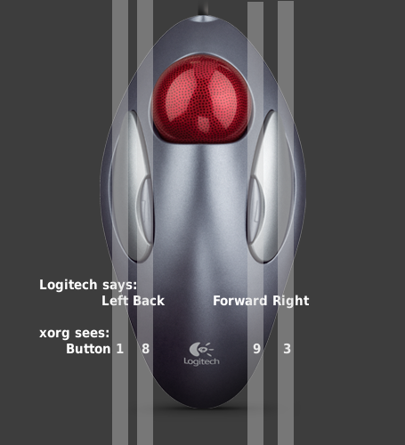

This document describes how to configure the Logitech TrackMan Marble Mouse (USB), shown in the following figure:

What Logitech calls left and right button are coded 1 and 3, with no middle button; the small buttons Logitech calls "Forward" and "Backward" are coded as back (8) and forward (9). This knowledge will help you create your own mappings, if desired.
Without any special configuration
Without any special configuration, the mouse would work the way expected:
However, the mouse lacks scroll buttons and middle button. These have to be emulated. This article is about how to make that happen.
This section guides the reader on how to establish a working trackball, tested using Ubuntu 18.04 through 19.04 (note the middle click caveat above). In 18.04, things are mostly the same as prior, but the driver has shifted from "evdev" to "libinput". This requires some minor tweaks to the options.
To get your Marble Mouse working in Ubuntu 18.04, complete the following steps:
For an explanation of the libinput options used below, see man (4) libinput, also available online here.
For a guide on how to update libinput in Wayland, including how to test options in run-time before encoding them in the configuration files, see here.
Example Configuration #1: add wheel emulation feature
This configuration yields:
Add the following text to the X Configuration File:
MatchProduct "Logitech USB Trackball"
Option "ScrollMethod" "button"
In this case, mouse wheel is emulated by pressing and holding the "Forward" button, the button 9. You can configure to use button 8, the "Back" button, instead, but, in that case, both "Left button" and "Back Button" would need to be pressed together in order to select text while scrolling, and since both buttons are under a thumb, it will be rather acrobatic to do it with just one thumb.
Example Configuration #2: add middle mouse button emulation
MatchProduct "Logitech USB Trackball"
Option "ScrollMethod" "button"
With this configuration, clicking left and right mouse button at the same time results a middle-click, which function as pasting the selected text under cursor to the place under mouse pointer.
Once you have logged back in, if it is not immediately working you can run
from a terminal, unplug and re-plug your mouse, and see what the X server is doing. You should see (among other things) two successive lines something like this:
(**) Logitech USB Trackball: Applying InputClass "libinput pointer catchall"
(**) Logitech USB Trackball: Applying InputClass "Marble Mouse"
If you only see the first and not the second, your InputClass section is being ignored. Either it is failing one of the Match lines (see the following paragraphs) or the configuration file it is in is being ignored entirely. If the Match lines appear correct, try moving the configuration from xorg.conf to xorg.conf.d/ as per above, or vice-versa.
In the above examples, the device name given in the MatchProduct option is "Logitech USB Trackball". Older models of the Marble Mouse may have a different name. Take a look at the output of the following command to determine the name of your device and change that line if necessary:
Edit the MatchProduct line in the above configuration to use your device name. For instance, older trackballs may use the following:
MatchProduct "ImExPS/2 Logitech Explorer Mouse"
These older models may also use a different button mapping:
Option "ButtonMapping" "1 8 3 4 5 6 7 2 9"
This section guides the reader on how to establish a working trackball using Ubuntu 10.04 through 17.10 (note the middle click caveat above). In 10.04, hal is gone, and udev does not appear to be reliably supported by Xorg. However, Xorg supports InputClass sections in its configuration files, which are described here.
To get your Marble Mouse working in Ubuntu 10.04, complete the following steps:
For an explanation of the evdev options used below, see man (4) evdev, also available online here (for X.org 7.5 as used in Ubuntu 10.04, 10.10 and 11.04).
Example Configuration #1: add wheel emulation feature
This configuration yields:
Add the following text to the X Configuration File:
MatchProduct "Logitech USB Trackball"
MatchDevicePath "/dev/input/event*"
Option "EmulateWheelButton" "9"
In this case, mouse wheel is emulated by pressing and holding the "Forward" button, the button 9. You can configure to use button 8, the "Back" button, instead, but, in that case, both "Left button" and "Back Button" would need to be pressed together in order to select text while scrolling, and since both buttons are under a thumb, it will be rather acrobatic to do it with just one thumb.
Example Configuration #2: add middle mouse button emulation
MatchProduct "Logitech USB Trackball"
MatchDevicePath "/dev/input/event*"
Option "EmulateWheelButton" "9"
Option "Emulate3Buttons" "true"
With this configuration, clicking left and right mouse button at the same time results a middle-click, which function as pasting the selected text under cursor to the place under mouse pointer.
In Ubuntu 12.04 and later, one additional configuration needs to be done. The default setting for middle-button-enabled in Gnome is false. Since Gnome settings are applied after xorg settings, this results in middle button emulation disabled. To fix this, run the following in a terminal:
gsettings set org.gnome.settings-daemon.peripherals.mouse middle-button-enabled true
This needs to be done only once for each user - Gnome remembers this setting between logins.
For a GUI alternative to gsettings, install the dconf-tools package and run dconf-editor. The setting can be found at org::gnome::settings-daemon::peripherals::mouse.
Example Configuration #3, forgo "Back" button
This example yields:
Add the following text to the X Configuration File:
MatchProduct "Logitech USB Trackball"
MatchDevicePath "/dev/input/event*"
Option "SendCoreEvents" "true"
# Physical buttons come from the mouse as:
# This makes left small button (8) into the middle, and puts
# scrolling on the right small button (9).
Option "ButtonMapping" "1 8 3 4 5 6 7 2 9"
Option "EmulateWheelButton" "9"
If you intend this:
Add this:
Once you have logged back in, if it is not immediately working you can run
from a terminal, unplug and re-plug your mouse, and see what the X server is doing. You should see (among other things) two successive lines something like this:
(**) Logitech USB Trackball: Applying InputClass "evdev pointer catchall"
(**) Logitech USB Trackball: Applying InputClass "Marble Mouse"
If you only see the first and not the second, your InputClass section is being ignored. Either it is failing one of the Match lines (see the following paragraphs) or the configuration file it is in is being ignored entirely. If the Match lines appear correct, try moving the configuration from xorg.conf to xorg.conf.d/ as per above, or vice-versa.
In the above examples, the device name given in the MatchProduct option is "Logitech USB Trackball". Older models of the Marble Mouse may have a different name. Take a look at the output of the following command to determine the name of your device and change that line if necessary:
Edit the MatchProduct line in the above configuration to use your device name. For instance, older trackballs may use the following:
MatchProduct "ImExPS/2 Logitech Explorer Mouse"
These older models may also use a different button mapping:
Option "ButtonMapping" "1 8 3 4 5 6 7 2 9"
Input devices are now configured using Hal, which means most settings in xorg.conf will be ignored when X starts. Hal's configuration files are stored in /etc/hal/fdi/policy with a file name extension of .fdi. After making configuration changes, restart X (or reboot the computer).
Avoid using Hal for this release as it has known issues. Try the following:
xinput set-int-prop "$dev" "$we Button" 8 8
xinput set-int-prop "$dev" "$we" 8 1
# xinput set-int-prop "$dev" "$we" 8 1
# xinput set-int-prop "$dev" "$we Button" 8 9
# xinput set-int-prop "$dev" "$we X Axis" 8 6 7
# xinput set-int-prop "$dev" "$we Y Axis" 8 4 5
# xinput set-int-prop "$dev" "Drag Lock Buttons" 8 8
chmod +x $HOME/bin/trackball.sh
xmodmap $HOME/.Xmodmap > /dev/null 2>&1
Logout and log back in. This setup provides:
Horizontal and Vertical Scrolling Example
To enable vertical and horizontal scrolling while holding down the small, left mouse button ("Back Button" in the image) change /etc/hal/fdi/policy/mouse-wheel.fdi to:
<?xml version="1.0" encoding="ISO-8859-1"?>
<match key="info.product" string="Logitech USB Trackball">
<merge key="input.x11_options.ButtonMapping" type="string">1 2 3 4 5 6 7 8 9</merge>
<merge key="input.x11_options.EmulateWheel" type="string">true</merge>
<merge key="input.x11_options.EmulateWheelButton" type="string">8</merge>
<merge key="input.x11_options.ZAxisMapping" type="string">4 5</merge>
<merge key="input.x11_options.XAxisMapping" type="string">6 7</merge>
<merge key="input.x11_options.Emulate3Buttons" type="string">true</merge>
To enable vertical scrolling while holding down the small, left mouse button ("Back Button" in the image), change /etc/hal/fdi/policy/mouse-wheel.fdi to:
<?xml version="1.0" encoding="ISO-8859-1"?>
<match key="info.product" string="Logitech USB Trackball">
<merge key="input.x11_options.ButtonMapping" type="string">1 8 3 9 2</merge>
<merge key="input.x11_options.EmulateWheel" type="string">true</merge>
<merge key="input.x11_options.EmulateWheelButton" type="string">8</merge>
<merge key="input.x11_options.ZAxisMapping" type="string">4 5</merge>
<merge key="input.x11_options.Emulate3Buttons" type="string">false</merge>
Here's the /etc/hal/fdi/policy/mouse-wheel.fdi for left-handed operation (with right-handed in comments):
<?xml version="1.0" encoding="ISO-8859-1"?>
<match key="info.product" string="Logitech USB Trackball">
<merge key="input.x11_options.Buttons" type="string">9</merge>
<merge key="input.x11_options.EmulateWheel" type="string">true</merge>
<merge key="input.x11_options.EmulateWheelTimeout" type="string">300</merge>
<merge key="input.x11_options.ButtonMapping" type="string">3 9 1 4 5 6 7 8 2</merge>
<merge key="input.x11_options.EmulateWheelButton" type="string">9</merge>
<!-- <merge key="input.x11_options.ButtonMapping" type="string">1 8 3 4 5 6 7 2 9</merge> -->
<!-- <merge key="input.x11_options.EmulateWheelButton" type="string">8</merge> -->
<merge key="input.x11_options.XAxisMapping" type="string">6 7</merge>
<merge key="input.x11_options.YAxisMapping" type="string">4 5</merge>
<merge key="input.x11_options.ZAxisMapping" type="string">4 5</merge>
<merge key="input.x11_options.Emulate3Buttons" type="string">true</merge>
If vertical scrolling does not work in Firefox, ensure the following about:config values are set (using Firefox):
mousewheel.horizscroll.withnokey.action user set integer 0
mousewheel.horizscroll.withnokey.sysnumlines user set boolean true
Currently the button mapping described above is being ignored by Hal. (As of 9.04 it appears that the button mapping is now applied correctly. Only use one method or the other.) This is particularly problematic if you want one of the small buttons to serve as middle click. A simple workaround is to remap what you need via xmodmap. As an example, let's map the small left button as middle click. Save this in your .Xmodmap file:
Note that all we did was to swap the numbers 2 and 8. If you'd like to use the small right button as middle click, swap 2 and 9 instead. The .Xmodmap file will be loaded next time you log in. To run it manually, run:
Using xmodmap affects all mice you have plugged in, an alternative is to use xinput to remap the buttons just for the device you specify.
$ xinput set-button-map "Logitech USB Trackball" 1 8 3 4 5 6 7 2 9
xinput may report the trackball as having 32 buttons and some window managers such as fluxbox require you to map all buttons reported for the device even though the buttons do not exist when using xinput. For fluxbox and similar window mangers the command below would map the trackball for left handed use. The large button on the right would be left click, the large button on the left would be right click, the small button on the right would function as a middle button, and the small button on the left would function as the scroll.
$ xinput set-button-map "Logitech USB Trackball" 3 9 1 4 5 6 7 8 2 10 11 12 13 14 15 16 17 18 19 20 21 22 23 24 25 26 27 28 29 30 31 32
If you have a different device and don't know its identifier, you can find it via:
Setting options via HAL may not work in Ubuntu 9.10 by default
Ubuntu 9.10 (Karmic Koala) contains gnome-settings-daemon 2.28.1 which does not honour settings made in /etc/hal/fdi/policy/. This is filed as http://bugs.debian.org/cgi-bin/bugreport.cgi?bug=552279. A workaround by disabling the mouse plugin of gnome-settings-daemon is described at http://bbs.archlinux.org/viewtopic.php?pid=644304. In my case (MacBook Pro 5,4 using the bcm5974 touchpad module) I had to reboot once after applying the workaround to make it stick. After this, I could change the settings as expected by editing the HAL fdi file and restarting HAL (some settings may need a module reload, too). Note that you can use
or similar to check whether the fdi settings were correctly merged into the configuration.
Alternative: apply settings via xinput
If you do not want to use HAL (or apply the workaround from the above section in Ubuntu 9.10), using xinput provides an alternative way to make the Logitech Marble work.
Horizontal & vertical scrolling with small left key & drag lock with small right key example:
xinput set-button-map "Logitech USB Trackball" 1 2 3 4 5 6 7 8 9
xinput set-int-prop "Logitech USB Trackball" "Evdev Wheel Emulation Button" 8 8
xinput set-int-prop "Logitech USB Trackball" "Evdev Wheel Emulation" 8 1
xinput set-int-prop "Logitech USB Trackball" "Evdev Wheel Emulation Axis" 8 6 7 4 5
xinput set-int-prop "Logitech USB Trackball" "Evdev Wheel Emulation X Axis" 8 6
xinput set-int-prop "Logitech USB Trackball" "Evdev Drag Lock Buttons" 8 9
You can add the lines above in a bash script (say marbleScroll.sh):
Now run the script
You can check what you have made via:
$ xinput list-props "Logitech USB Trackball"